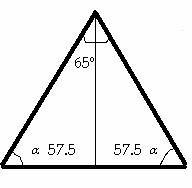
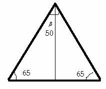

Para el aula
Problema 299
11. Si en un triángulo isósceles un ángulo mide 65º,
calcúlese el valor, en grados, de sus otros dos ángulos. Considérense los dos
casos posibles.
Vázquez, R. y Ramos, C. (1972): Matemáticas modernas. Trillas, México. (pag 250)
Solución de Manuel Peña Alcaraz, estudiante de 4º de
ESO en el Colegio Portaceli de Sevilla.
Sabemos que si un triángulo es isósceles, dos de sus ángulos son iguales, por lo que , tenemos dos posibilidades:
A) que el ángulo que une los dos lados iguales mida 65º, en cuyo caso que sería 57.5º cada uno de los otros dos ángulos.

B) Que uno de los ángulos iguales mida 65º, en cuyo caso , que sería 50º el angulo que falta.
